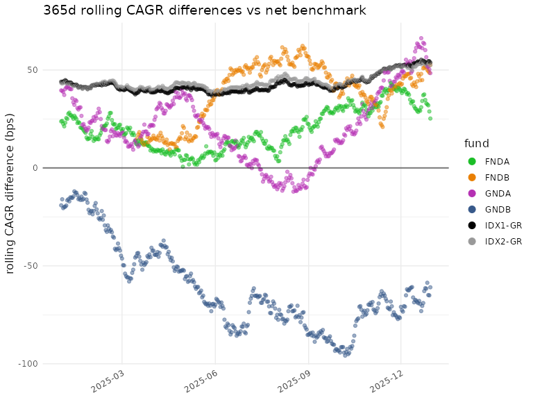
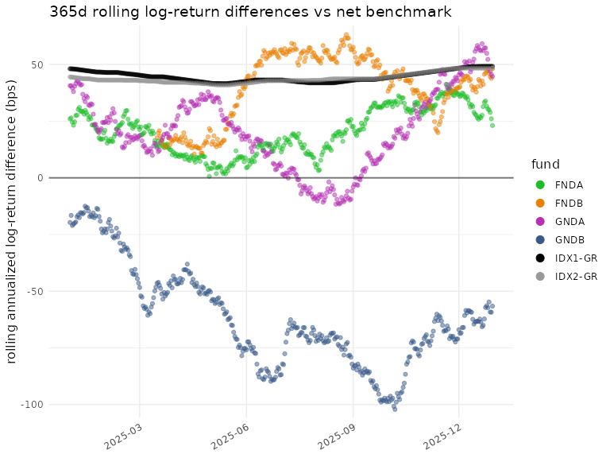
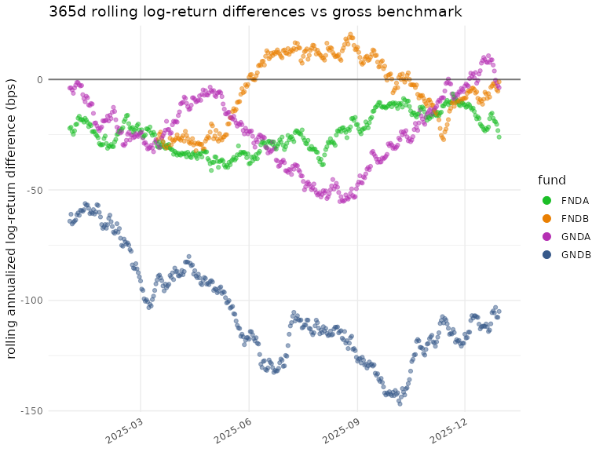

Importing Data and Computing Differences in fundsr
Stanislav Traykov
2026-01-12
Source:vignettes/importing-and-computing-differences.Rmd
importing-and-computing-differences.Rmd
This vignette shows how to load data into fundsr and compute rolling differences (CAGR and log) using the example files shipped with the package. For a demonstration based on NAV histories downloaded from fund providers—which also covers liquidity plots and translation support—see Simple Demo Using Real Data. Guidance on obtaining real NAVs and index levels lives in the project wiki.
More complex workflows are provided (without data) under
scripts/examples in the package directory; start with
glob_funds.R or all_funds.R. The directory can
be located with
system.file("scripts/examples", package = "fundsr").
The master table
fundsr’s core workflow (Figure 1) consists of reading daily fund NAVs
and index levels from files and building a master series table.
Plottable tracking differences are computed from this table via
roll_diffs().
Figure 1: Rolling differences workflow
The master table has a date column named date and one
column per series (either fund NAVs or net/gross index levels; see Table
1 for an example). Fund NAV columns use lowercase names by convention
(e.g. spyy). Index level columns are typically uppercase
(e.g. ACWI, GMLM, SP500) or
mixed-case with an initial uppercase letter (e.g. WxUSA).
Net total return levels are stored under a shortened index name, while
gross total return levels are identified by a -GR suffix
(e.g. ACWI-GR, SP500-GR).
Note: The lowercase naming is useful because fund
identifiers (typically tickers) may coincide with index names
(e.g. Amundi’s ACWI). The -GR suffix is the default value
of the gross_suffix parameter in roll_diffs(),
which is used to switch between net and gross calculations.
IMPORTANT: Only NAV histories of accumulating funds are valid inputs, as these are equivalent to total return series. fundsr does not support total return calculation for distributing ETFs and using it with such NAVs will produce garbage. (I am not aware of a free source of comprehensive distribution histories for UCITS ETFs that would allow reconstruction of total return.)
| date | iusq | spyi | spyy | webn | scwx | ACWI | ACWI-GR | GMLM | GMLM-GR |
|---|---|---|---|---|---|---|---|---|---|
| 2025-10-14 | 104.5 | 279.6 | 277.5 | 12.57 | 11.67 | 536.7 | 2307 | 2467 | 2569 |
| 2025-10-15 | 105.2 | 281.7 | 279.5 | 12.67 | 11.75 | 540.6 | 2324 | 2485 | 2588 |
| 2025-10-16 | 105.1 | 281.4 | 279.3 | 12.66 | 11.74 | 540.0 | 2321 | 2483 | 2586 |
| 2025-10-17 | 105.1 | 281.1 | 279.2 | 12.65 | 11.73 | 539.8 | 2320 | 2481 | 2584 |
| 2025-10-20 | 106.3 | 284.5 | 282.5 | 12.80 | 11.87 | 546.3 | 2348 | 2511 | 2615 |
| 2025-10-21 | 106.2 | 284.3 | 282.3 | 12.79 | 11.86 | 545.8 | 2346 | 2508 | 2613 |
| 2025-10-22 | 105.8 | 283.1 | 281.2 | 12.74 | 11.82 | 543.6 | 2337 | 2499 | 2603 |
Setup
fundsr_options() can be used to set (and sanity-check)
package options.
fundsr reads fund NAVs and index levels from a single directory
specified via the fundsr.data_dir option. The following
code sets it to the extdata directory shipped with the
package. The plot output directory is set to output (option
fundsr.out_dir).
fundsr_options(
data_dir = system.file("extdata", package = "fundsr"),
out_dir = "output", # where to store plots
export_svg = TRUE, # output SVG (main workflow)
px_width = 1300, # for optional PNG output
# internal_png = TRUE, # output PNG using ggplot2
# Need to set path only if auto-detection fails
# inkscape = "path/to" # optional PNG output via Inkscape
)Note: In normal use, fundsr may also write to the
data directory, if download_fund_data() is used.
Importing
Importing usually involves reading fund NAVs and index levels from
Excel, CSV, or TSV files into data frames and storing them in fundsr’s
cached storage environment, from which the master table is constructed
(typically via a single call to build_all_series()). A
fund→index map, required for tracking-difference calculations, is
maintained and updated as new series are added.
The example files in Table 2 (shipped with the package in
extdata) are used to demonstrate the importing
functions.
| File | Type | Description |
|---|---|---|
| FNDA.xlsx | Excel | NAVs for fund FNDA tracking IDX1 |
| FNDB.xlsx | Excel | FNDB tracking IDX1, fund launched 2024-03-16 |
| GNDA.xlsx | Excel | NAVs for fund GNDA tracking IDX2 |
| GNDB.csv | CSV | NAVs for fund GNDB tracking IDX2 |
| IDX1.xlsx | Excel | index levels for IDX1, net and gross |
| IDX2G.csv | CSV | index levels for IDX2, gross return |
| IDX2N.csv | CSV | index levels for IDX2, net return |
store_timeseries()
store_timeseries() is the basic function for importing
into the storage environment. It is most commonly used via wrappers such
as load_fund() or the vendor-specific wrappers around
load_fund()—handling Excel NAV histories from Amundi, HSBC,
Invesco, iShares, SPDR, UBS, Vanguard, and Xtrackers. It is often called
directly when importing CSV/TSV files or data frames.
The example fund GNDB has a NAV history in CSV format with dates expressed as milliseconds since the Unix epoch, a NAV column, and a Benchmark column that will not be imported from the fund file in this example.
Date,NAV,Benchmark
1704067200000,100,100
1704153600000,101.595595,101.588368
1704240000000,100.510764,100.494977GNDB’s NAV data can be loaded into fundsr’s storage environment by
reading it as a tibble via read_timeseries().
read_timeseries() recognizes the date format, parses the
dates, and renames the date column to date, as required for
the master table. The NAV column from the CSV file has to
be renamed separately to a lowercase fund identifier for the master
table. The select() in the middle of the pipeline ensures
the extraneous Benchmark column is not included (we will
import the benchmark later from its own file).
store_timeseries(
var_name = "gndb",
expr = read_timeseries("GNDB.csv", date_col = "Date") |>
select(date, NAV) |>
rename(gndb = NAV),
fund_index_map = c(gndb = "IDX2")
)The variable name used for the storage environment
(var_name) can be chosen arbitrarily and serves as the
cache key. The fund_index_map parameter defines a mapping
from fund identifier to its corresponding index identifier.
Note: To make use of caching, the expression
supplied via the expr parameter should not
contain a ready-made tibble or similar, constructed outside of the call.
It should contain a function call or pipeline that performs the
potentially costly operations, like loading from Excel, the Internet,
etc. If var_name is already present in fundsr’s storage
environment, the expression will not be evaluated at
the time of the store_timeseries() call, unless a reload is
being requested or the overwrite parameter to
store_timeseries() is TRUE. (See Using data loaders and Resetting and reloading.)
When loading gross indices, the convention is to map them to the net
index in the fund_index_map
(e.g. SP500-GR→SP500). This allows gross
indices to be plotted against net indices. When plotted against the net
index, the gross index serves a reference equivalent to an ETF with
perfect tracking, no withholding taxes, and no ongoing fees.
The following code block uses store_timeseries() to load
the IDX1 and IDX2 indices, tracked by the
example funds. read_timeseries_excel() flexibly reads Excel
files and accepts a col_trans argument to translate Excel
columns (matched using regular expressions) to imported columns.
IDX2 is imported into a single variable (idx2)
by joining the net and gross time series (via
dplyr::full_join()). The columns in
IDX2{N,G}.csv are already appropriately named for the
master table. Importing the files into separate variables via two calls
to store_timeseries() would lead to the same master
table.
store_timeseries(
var_name = "idx1",
expr = read_timeseries_excel(
file = "IDX1.xlsx",
sheet = 1,
date_col = "^Date",
col_trans = c("IDX1" = "^Index One Net",
"IDX1-GR" = "^Index One Gross"),
date_order = "dmy"
),
fund_index_map = c(`IDX1-GR` = "IDX1")
)
#> Reading Excel: '/tmp/RtmpNHTwCB/temp_libpath1d696685a5d/fundsr/extdata/IDX1.xlsx'
store_timeseries(
var_name = "idx2",
expr = full_join(read_timeseries("IDX2N.csv"),
read_timeseries("IDX2G.csv"),
by = "date"),
fund_index_map = c(`IDX2-GR` = "IDX2")
)
load_fund()
load_fund() reads an Excel file with fund NAVs into the
storage environment (it calls store_timeseries() with an
expression that uses read_timeseries_excel()). It accepts
regular expressions for identifying the date and NAV
columns and a sheet (name or number) selecting the
worksheet within the Excel workbook that contains the NAV history. The
default values are date_col = "^Date",
nav_col = "^NAV", and sheet = 1 (which works
for single-sheet workbooks). The first argument (usually a fund ticker),
converted to lowercase, is used as the variable name for
store_timeseries() and as the tibble column name that will
eventually propagate to the master table. The benchmark
argument provides the fund→index mapping.

Figure 2: Excel file for FNDA
The NAV history for FNDA is provided in an Excel workbook with
multiple sheets and a date column named “As Of” (Figure 2). If the
defaults for sheet, date_col, or
nav_col do not match the file layout, you
must specify the relevant parameters. They will be used
to reliably locate the NAV and date ranges even when the sheet contains
extraneous rows and columns around the data (common in fund-manager
files). For this file, sheet and date_col are
required; nav_col is optional because the default would
still match.
load_fund("FNDA",
"FNDA.xlsx",
benchmark = "IDX1",
sheet = "historical",
date_col = "^As Of",
nav_col = "^NAV")
#> Reading Excel: '/tmp/RtmpNHTwCB/temp_libpath1d696685a5d/fundsr/extdata/FNDA.xlsx'load_fund() recognizes proper Excel dates, improperly
stored Excel dates, and a large number of text date formats used in fund
files, but the date order (e.g. "dmy", "mdy",
"ymd") must be known for interpretation of text dates. It
defaults to "dmy" which is the most common in UCITS ETF NAV
histories.
FNDB has text dates in MM/DD/YYYY format, so supplying
date_order = "mdy" is required.
load_fund("FNDB",
"FNDB.xlsx",
benchmark = "IDX1",
date_col = "^date",
nav_col = "^net asset val",
date_order = "mdy")
#> Reading Excel: '/tmp/RtmpNHTwCB/temp_libpath1d696685a5d/fundsr/extdata/FNDB.xlsx'The final fund to load is GNDA.
load_fund("GNDA",
"GNDA.xlsx",
benchmark = "IDX2",
date_col = "^Date",
nav_col = "^Official NAV")
#> Reading Excel: '/tmp/RtmpNHTwCB/temp_libpath1d696685a5d/fundsr/extdata/GNDA.xlsx'Building the master table
First, verify that all funds and indices from the previous sections have been loaded into the storage environment, and that columns follow the naming convention: lowercase for funds and uppercase (or initial uppercase) for indices.
s <- get_storage()
ls(s)
#> [1] "fnda" "fndb" "gnda" "gndb" "idx1" "idx2"
for (v in ls(s)) {
print(as.data.frame(slice_head(s[[v]], n = 2)))
}
#> date fnda
#> 1 2024-01-01 100.0000
#> 2 2024-01-02 101.4624
#> date fndb
#> 1 2024-03-16 106.2136
#> 2 2024-03-17 104.2975
#> date gnda
#> 1 2024-01-01 100.0000
#> 2 2024-01-02 101.5749
#> date gndb
#> 1 2024-01-01 100.0000
#> 2 2024-01-02 101.5956
#> date IDX1 IDX1-GR
#> 1 2024-01-01 100.0000 100.0000
#> 2 2024-01-02 101.4753 101.4767
#> date IDX2 IDX2-GR
#> 1 2024-01-01 100.0000 100.00
#> 2 2024-01-02 101.5884 101.59build_all_series() joins all tibbles (or other types of
data frames) in the storage environment into a single tibble—the master
series table.
master_series <- build_all_series()master_series should now be a tibble resembling Table 3.
The fndb column contains NA values in the
initial rows due to FNDB launching in 2024-03-16 (the first NAV date in
its Excel file).
| date | fnda | fndb | gnda | gndb | IDX1 | IDX1-GR | IDX2 | IDX2-GR |
|---|---|---|---|---|---|---|---|---|
| 2024-01-01 | 100.000 | NA | 100.000 | 100.000 | 100.000 | 100.000 | 100.000 | 100.000 |
| 2024-01-02 | 101.462 | NA | 101.575 | 101.596 | 101.475 | 101.477 | 101.588 | 101.590 |
| 2024-01-03 | 100.395 | NA | 100.487 | 100.511 | 100.390 | 100.392 | 100.495 | 100.498 |
| 2024-01-04 | 100.740 | NA | 100.622 | 100.619 | 100.736 | 100.740 | 100.613 | 100.618 |
| 2024-01-05 | 99.156 | NA | 99.112 | 99.089 | 99.166 | 99.172 | 99.104 | 99.111 |
| 2024-01-06 | 100.029 | NA | 100.140 | 100.126 | 100.051 | 100.058 | 100.156 | 100.164 |
Advanced joining
If there are multiple sources for the same series and values need to
be coalesced into a single column, both series can be loaded with the
same column name into different variables in the storage environment.
When building the series, one can be designated late.
# load fund NAVs, uses default "acme" for column and storage variable
load_fund("ACME",
file = "ACME1.xlsx",
date_col = "As Of")
# also load NAVs into "acme" column, but storage variable is "acme2"
load_fund("ACME",
var_name = "acme2",
file = "ACME2.xlsx",
date_col = "As Of")
# join "acme" and "acme2"
# both columns will be available, named "acme.late" and "acme.early"
series <- build_all_series(late = "acme2")
# join and coalesce
# on dates where both columns have values, prefer "acme2"
series <- build_all_series(late = "acme2",
join_precedence = c(".late", ".early"))
# as above, but instead of the default left join, perform a full join
series <- build_all_series(late = "acme2",
join_precedence = c(".late", ".early"),
late_join = dplyr::full_join)Vendor-specific wrappers
The following wrappers use load_fund() to import Excel
files provided by fund managers.
-
amun()(Amundi) -
hsbc()(HSBC) -
inve()(Invesco) -
ishs()(iShares) -
spdr()(SPDR) -
ubs()(UBS) -
vang()(Vanguard) -
xtra()(Xtrackers)
Example usage:
xtra("EXUS", benchmark = "WxUSA",
file = "HistoricalData-IE0006WW1TQ4.xlsx")
xtra("EXUS", benchmark = "WxUSA") # assumes EXUS.xls[x]Note: MSCI Excel downloads can be imported via
msci(). MSCI TSV files (the download format for leveraged
indices) can be read via read_msci_tsv().
Downloading NAV histories
fundsr can download Excel files from iShares and SPDR. Funds and URLs
can be set up via add_fund_urls().
add_fund_urls(c(
SPYY = "https://www.ssga.com/ie/en_gb/institutional/library-content/products/fund-data/etfs/emea/navhist-emea-en-spyy-gy.xlsx",
IUSQ = "https://www.ishares.com/uk/individual/en/products/251850/ishares-msci-acwi-ucits-etf/1535604580409.ajax?fileType=xls&fileName=iShares-MSCI-ACWI-UCITS-ETF-USD-Acc_fund&dataType=fund"
))Downloaded files are stored in the data directory
(fundsr.data_dir option) as SPYY.xlsx, etc.
This allows for easy importing via the vendor-specific wrappers.
# do not redownload existing files (the default)
download_fund_data(redownload = FALSE)
spdr("SPYY", benchmark = "ACWI") # assumes SPYY.xls[x]
ishs("IUSQ", benchmark = "ACWI")
series <- build_all_series()Retrieving benchmarks from fund files
Some fund managers include a benchmark return series in their Excel
downloads. fundsr can retrieve this benchmark via the
retrieve_benchmark parameter (supported for Invesco,
iShares, and Xtrackers).
ishs("IUSQ", benchmark = "ACWI", retrieve_benchmark = TRUE)Note: Benchmark series from fund files may have missing values. If available, data files from the index provider should be preferred.
Using data loaders
Before joining the data frames in the storage environment,
build_all_series() calls run_data_loaders()
which invokes all registered as data loaders. Instead of directly
calling store_timeseries(), load_fund(), etc.,
more complex workflows should register functions as data loaders via
add_data_loader(). A script setting up funds tracking MSCI
ACWI could do the following.
add_fund_urls(c(
IUSQ = "https://...",
SPYY = "https://...",
))
download_fund_data() # download only missing files
add_data_loader(function() {
# downloaded via download_fund_data()
spdr("SPYY", benchmark = "ACWI")
ishs("IUSQ", benchmark = "ACWI",
retrieve_benchmark = TRUE)
# manual download
xtra("SCWX", benchmark = "ACWI",
file = "HistoricalData-LU2903252349.xlsx")
})Note: Data loaders calling
store_timeseries() directly should make use of the caching
mechanic and provide costly operations (file reads, downloads) as the
second (or expr) parameter to
store_timeseries(). This parameter will not be evaluated
when the data loader is run, unless the variable is missing from the
storage environment or a reload is requested.
An example data loader handling more funds and index data is shown in the following code block.
add_data_loader(function() {
### Indices
# Solactive GBS GM L&M Cap
store_timeseries("gmlm", read_timeseries("GMLM.csv"))
store_timeseries("gmlm-gr", read_timeseries("GMLM-GR.csv"),
fund_index_map = c(`GMLM-GR` = "GMLM"))
# FTSE All-World
store_timeseries("ftaw", read_timeseries("FTAW.csv"),
fund_index_map = c(`FTAW-GR` = "FTAW"))
# MSCI ACWI and ACWI IMI
msci(var_name = "msci-nt",
col_trans = c(ACWI = "^ACWI Standard",
ACWI_IMI = "^ACWI IMI"),
file = "MSCI-NT.xls")
msci(var_name = "msci-gr",
col_trans = c(`ACWI-GR` = "^ACWI Standard",
`ACWI_IMI-GR` = "^ACWI IMI"),
benchmarks = c(`ACWI-GR` = "ACWI",
`ACWI_IMI-GR` = "ACWI_IMI"),
file = "MSCI-GR.xls")
### Funds
# manual downloads
amun("WEBN", benchmark = "GMLM",
file = "NAV History_Amundi_WEBN.xlsx")
vang("VWCE", benchmark = "FTAW",
file = "Vanguard FTSE All-World UCITS.xlsx")
xtra("SCWX", benchmark = "ACWI",
file = "HistoricalData-LU2903252349.xlsx")
inve("FWRA", benchmark = "FTAW") # "FWRA.xls[x]" assumed
# downloaded via download_fund_data()
spdr("SPYY", benchmark = "ACWI")
spdr("SPYI", benchmark = "ACWI_IMI")
ishs("IUSQ", benchmark = "ACWI")
})Call all registered data loaders and build the master series table by joining all objects in the storage environment.
series <- build_all_series()Only call registered loaders, without joining the objects. Returns
the storage environment (also available directly via
get_storage()).
storage <- run_data_loaders()Build the master table without running data loaders.
series <- join_env(storage, by = "date")Resetting and reloading
A full reload (rerunning the registered data loaders and rebuilding
the master table) can be accomplished via
run_data_loaders() and join_env() or a single
call to build_all_series() with the reload
parameter set to TRUE.
# rerun data loaders, discard variables in storage environment
storage <- run_data_loaders(reload = TRUE)
# reconstruct series table
series <- join_env(storage, by = "date")
# equivalent, piped
series <- run_data_loaders(reload = TRUE) |>
join_env(by = "date")
# equivalent, via build_all_series() helper
series <- build_all_series(reload = TRUE)Downloaded files can be refreshed with the redownload
parameter.
download_fund_data(redownload = TRUE)The package state can be fully reset with
reset_state().
# reset everything (except fundsr.* options)
reset_state()More granular resetting functions are also available.
# reset the storage environment (optionally also the fund-index map)
clear_storage()
clear_storage(clear_map = TRUE)
# just the fund-index map
clear_fund_index_map()
# deregister all data loaders
clear_data_loaders()Calculating differences
roll_diffs() calculates CAGR differences and log-return
differences from a master series table. It returns a named list with
elements cagr and log (each a data frame).
Using the constructed master_series table from Building the master table, the
rolling net and gross differences can be calculated with the following
calls.
n_days <- 365 # 365-day rolling window
diffs_net <- roll_diffs(master_series,
n_days,
get_fund_index_map(),
index_level = "net")
#> Roll diffs gndb -> IDX2
#> Roll diffs IDX1-GR -> IDX1
#> Roll diffs IDX2-GR -> IDX2
#> Roll diffs fnda -> IDX1
#> Roll diffs fndb -> IDX1
#> Roll diffs gnda -> IDX2
diffs_gross <- roll_diffs(master_series,
n_days,
get_fund_index_map(),
index_level = "gross")
#> Roll diffs gndb -> IDX2-GR
#> Skipping IDX1-GR: self-tracking
#> Skipping IDX2-GR: self-tracking
#> Roll diffs fnda -> IDX1-GR
#> Roll diffs fndb -> IDX1-GR
#> Roll diffs gnda -> IDX2-GRThe following code performs the same calculation, avoiding repetition
and silencing roll_diffs() via the messages
parameter. Differences can be accessed via diffs$net$cagr,
diffs$gross$log, etc.
diffs <- purrr::map(
list(net = "net", gross = "gross"),
~ roll_diffs(master_series,
n_days,
get_fund_index_map(),
index_level = .x,
messages = NULL)
)Inspect the most recent 365-day differences in basis points (bps).
# show last 3 rows, multiplied by 10K (=> bps),
# and rounded to 4 significant digits
checkout <- function(x) {
x |>
slice_tail(n = 3) |>
mutate(across(-date, ~ signif(.x * 10000, digits = 4)))
}
checkout(diffs_gross$cagr)
#> date gndb IDX1-GR IDX2-GR fnda fndb gnda
#> 1 2025-12-28 -118.3 NA NA -22.56 -5.122 -1.621
#> 2 2025-12-29 -118.5 NA NA -25.65 -5.872 -3.119
#> 3 2025-12-30 -113.3 NA NA -28.56 -1.171 -4.020
checkout(diffs_net$log)
#> date gndb IDX1-GR IDX2-GR fnda fndb gnda
#> 1 2025-12-28 -59.21 49.16 48.4 28.84 44.55 46.93
#> 2 2025-12-29 -59.28 49.16 48.4 26.04 43.87 45.58
#> 3 2025-12-30 -56.58 49.16 48.4 23.08 48.09 44.70
checkout(diffs$net$log) # same
#> date gndb IDX1-GR IDX2-GR fnda fndb gnda
#> 1 2025-12-28 -59.21 49.16 48.4 28.84 44.55 46.93
#> 2 2025-12-29 -59.28 49.16 48.4 26.04 43.87 45.58
#> 3 2025-12-30 -56.58 49.16 48.4 23.08 48.09 44.70Plotting
Setup
funds <- c("fnda", "fndb", "gnda", "gndb", "IDX1-GR", "IDX2-GR")
gg <- scale_color_manual(
labels = toupper, # uppercase fund names for the legend
values = c(
"IDX1-GR" = "black",
"IDX2-GR" = "grey60",
"fnda" = "#1bbe27",
"fndb" = "#e97f02",
"gnda" = "#b530b3",
"gndb" = "#37598a"
)
)Output
plot_roll_diffs(diffs_net$cagr,
funds = funds,
n_days = n_days,
use_log = FALSE,
bmark_type = "net",
gg_params = gg)
#> plot_roll_diffs: 365d rolling CAGR differences vs net benchmark
plot_roll_diffs(diffs_net$log,
funds = funds,
n_days = n_days,
use_log = TRUE,
bmark_type = "net",
gg_params = gg)
#> plot_roll_diffs: 365d rolling log-return differences vs net benchmark
plot_roll_diffs(diffs_gross$cagr,
funds = funds,
n_days = n_days,
use_log = FALSE,
bmark_type = "gross",
gg_params = gg)
#> plot_roll_diffs: 365d rolling CAGR differences vs gross benchmark
plot_roll_diffs(diffs_gross$log,
funds = funds,
n_days = n_days,
use_log = TRUE,
bmark_type = "gross",
gg_params = gg)
#> plot_roll_diffs: 365d rolling log-return differences vs gross benchmark
See run_plots() and the examples under
scripts/examples for a way to generate plots via flexible
specifications.